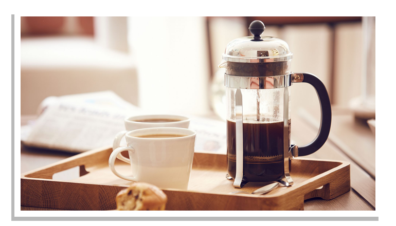
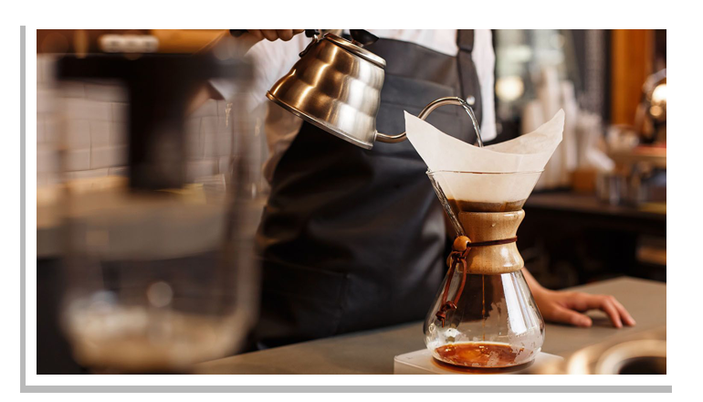

Boil cold, clean water. Grind beans and add to the French Press (see measurements below).
Let water rest for at least 30 seconds after bringing it to a boil.
Fill French Press with the desired amount of water (see measurements below).
Watch the coffee bloom (fresher coffee results in a better bloom).
Give the grounds a good stir.
Let it brew for 4-5 minutes.
Plunge gently and serve.
French Press Tips
Water
Water makes up 98.5% of a cup of coffee. If the tap water tastes good to drink, it's good to make coffee with.
Use it cold and freshly poured from the tap. (Let the tap run for a few seconds first.)
If the tap water isn't great, then use natural spring water for best results.
Grinding
Grind fresh beans just before use. The French Press method calls for a coarse grind.
The grind size should be between .75 mm and 1 mm. If the grind is too coarse it will make the coffee taste weak.
If the grind is too fine, it will make the coffee taste bitter or too strong. For the most consistent outcome,
we recommend a burr grinder.
Measurements
We recommend a coffee to water ratio of 50 grams (1.8 oz) of ground coffee per 1 litre (34 fl oz) of water.
In English, that's two tablespoons for every cup of water. More if you're bold, less if you're not.
Storage
Coffee absorbs odours and deteriorates when it contacts air.
Keep coffee tightly rolled in its coffee bag until ready to grind more beans. Store coffee in a dry, cool location,
but not in the fridge or freezer.


POUR OVER
Here's How:
Boil water.
Let water rest for approximately 30 seconds after bringing it to a boil.
Position filter in the Chemex brewer. If using a Chemex filter, place the triple layered side on the spout side.
Dampen the filter with hot water to rinse filter and preheat the brewer.
Pour out the water while keeping the filter sealed against the coffee maker wall.
Grind your coffee (or use Ground coffee) and add to the filter. Level the coffee and create a small well in the middle.
Gently pour a bit of water (about 100ml) on the grinds to saturate them and wait 30 seconds for the grinds to ‘bloom’.
Slowly pour the remaining water over the grounds in approximately 100ml increments using a circular or back and forth motion
to ensure the grinds are just covered at all times. This will make for a steady extraction (drip).
*Be careful not to pour water on the outside of the filter. Pour this way until you’ve used up the water.
Let the drip cycle finish & remove the filter.
Give your Chemex brewer a nice swirl to ensure the coffee is evenly blended.
Pour yourself a cup & Enjoy!
Pour Over Tips
Water
Water makes up 98.5% of a cup of coffee. If the tap water tastes good to drink, it's good to make coffee with.
Use it cold and freshly poured from the tap. (Let the tap run for a few seconds first.)
If the tap water isn't great, then use natural spring water for best results.
Measurements
We recommend a coffee to water ratio of 50 grams (1.8 oz) of ground coffee per 1 litre (34 fl oz) of water.
In English, that's two tablespoons for every cup of water. More if you're bold, less if you're not.
Storage
Coffee absorbs odours and deteriorates when it contacts air.
Keep coffee tightly rolled in its coffee bag until ready to grind more beans. Store coffee in a dry, cool location,
but not in the fridge or freezer.
ESPRESSO
Here's How:
The espresso machine needs to be warmed up for a minimum of 20 minutes with the portafilter attached to grouphead.
Run a shot of water through the grouphead and portafilter to rinse and purge the machine.
Wipe portafilter with a dry cloth.
Add Coffee beans to the grinder hopper.
Grind 18-21g of coffee directly into the porta filter (fine grind).
Level coffee grinds in portafilter
Using the tamper, tamp the grinds with 30lbs of pressure distributed evenly across the coffee bed (this ensures even extraction).
Give the tamper a gentle ¼ turn to ‘polish’ the grinds.
Lock the portafilter into grouphead.
Place espresso cup under the portafilter.
Start the extraction - the shot should start with a slow drip and turn into a gentle stream.
A 2oz shot should extract in approximately 20 seconds
Serve and enjoy!
Espresso Tips
Water
Depending on your water source, if your water is hard you may need to decalcify your espresso machine.
Most espresso machine manufacturers sell a specific product to do so.
Cleaning
Dump the espresso puck into your composting bin, rinse out the portafilter and replace into the grouphead.
Every few shots, take the portafilter apart, wash in hot water with a mild dish soap, rinse and let air dry.
Also ensure to wash the drip tray and the water reservoir.